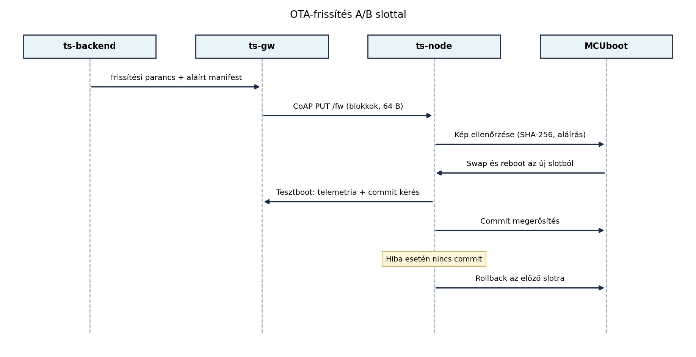

A TerraSense üvegházban a ts-node eszközök folyamatosan
mérik a hőmérsékletet, páratartalmat és talajnedvességet, valamint
öntözőszelepet vezérelnek. Tegyük fel, hogy az öntözésvezérlő
állapotgépében hibát találunk: fagyveszély esetén is nyitva hagyja a
szelepet, ami a növények károsodásához vezethet. A javítás sürgős, de a
200 darab telepített csomópontot fizikailag felkeresni nem lehetséges.
Az OTA-frissítés (Over-The-Air, azaz hálózaton keresztüli frissítés) az
egyetlen járható út. A hibás frissítés azonban még rosszabb: ha az új
kép nem indul, az eszköz „téglává” (brick) válik, és a teljes állomány
elveszítheti a felügyeletet. Ezért olyan mechanizmus kell, amely
áramszünet, félbeszakadt letöltés vagy rossz kép esetén is helyreállítja
a rendszert – de ez csak megfelelően konfigurált bootloaderrel,
watchdoggal és megerősítési logikával garantálható, nem pusztán attól,
hogy két flash-slot létezik.
Definíció. - OTA-frissítés (Over-The-Air update): firmware- vagy alkalmazáskép cseréje hálózaton keresztül, fizikai hozzáférés nélkül. - A/B slot: két, logikailag elkülönített flash-terület. Az egyik az aktív (bootoló) kép, a másik fogadja az új verziót. A csere után a bootloader dönti el, melyikből indítson. Az MCUboot a swap állapotát flash-metaadatokban tartja, ezért egy swap közbeni újraindulás folytatható; ez azonban a swap módjától és a board flash-elrendezésétől függ. - Tesztboot (test boot): az új kép első, felügyelt indítása. Az alkalmazásnak a sikeres futásidejű ellenőrzés után meg kell erősítenie a képet (commit); ha ez elmarad, a bootloader a következő újrainduláskor visszaáll a korábbi slotra. - Rollback: visszatérés az előző, ismert jó slotra, ha az új kép nem indul, nem jut el a commitig, vagy a watchdog újraindítja. A visszaállás csak akkor automatikus, ha a bootloader tesztboot-módja, a watchdog és az alkalmazás commit-logikája együtt konfigurálva van. - Delta-frissítés: csak a két firmware-verzió közötti bináris különbség (delta) letöltése, nem a teljes kép. - Canary kiadás: a frissítés először egy kis, reprezentatív eszközcsoporton történik; a telemetriai adatok alapján döntenek a folytatásról.
A TerraSense eszközoldali frissítési folyamatának tervezett
szerződése a CoAP: REST UDP fölött, Observe
és blokkátvitel alfejezetben rögzített konvencióra épül: a frissítő
kliens a coap://ts-node/fw erőforrásra PUT metódussal, 64
bájtos blokkokban küldi a firmware-t; az eszköz köztes válasza 2.31
Continue, az utolsó blokkra 2.04 Changed. A teljes kép megérkezése után
az eszköz ellenőrzi az integritást (a Biztonságos
boot és firmware-aláírás alfejezetben bemutatott SHA-256 és
aláírás-ellenőrzés), majd a bootloader elvégzi a slotcserét és az új
képből bootol.
A fejezet hatóköre. Ez az alfejezet a frissítési folyamat szerződését, a manifest biztonsági követelményeit és az alkalmazásszintű állapotgépet definiálja. A
ts-nodeoldali CoAP-vevő, a flash-író driver, az MCUboot-integráció és a gateway oldali orchestrátor implementációja nem része a laboroknak. A labor az állapotgépet modellezi hoston; a valódi, hálózaton keresztüli firmware-átvitel megvalósítása és céleszközön történő igazolása a záróprojekt feladata. Amíg ez el nem készül és nem bizonyított, a záróprojekt nem állíthatja, hogy működő OTA-frissítést tartalmaz.
Az alábbi szekvenciadiagram a normál sikeres frissítést és a rollback esetet vázolja:

A frissítési manifest (metaadat) a verzió, a kép mérete és SHA-256
lenyomata mellett tartalmazza a komponens- és hardverazonosítót, a
delta-bázis verzióját, a minimális akkufeszültséget, az anti-rollback
biztonsági számlálót és a manifest ECDSA-aláírását. A
ts-node csak akkor kezdi el a letöltést, ha az
akkufeszültség a küszöb felett van, a manifest aláírása érvényes, a
component és a hw_id egyezik, és a
security_counter nagyobb a készüléken tárolt értéknél. A
gateway (ts-gw) szerepe a tervezett folyamatban a kép
tárolása és a blokkátvitel felügyelete; ennek implementációja – a(z) A gateway üzemeltetése: systemd, konténerek,
naplózás alfejezet üzemeltetési mintái mellett – szintén a
záróprojekt feladata.
Az OTA-tervezésnél több kompromisszumot kell mérlegelni, ezeket az alábbi táblázat foglalja össze.
| Döntés | Változatok | TerraSense választás | Indoklás |
|---|---|---|---|
| Letöltési protokoll | MQTT, HTTP, CoAP | CoAP blokkátvitel (CoAP: REST UDP fölött, Observe és blokkátvitel) | Kis memóriaigényű, UDP-n is működik, a blokkátvitel félbeszakadás-tűrő |
| Slotok száma | Egy slot, A/B | A/B (MCUboot) | A swap metaadatai alapján a megszakadt swap folytatható; a rollbackhez tesztboot és watchdog is kell |
| Képtípus | Teljes, delta | Teljes alapértelmezés, delta opcionális nagy flottánál | A delta csökkenti az átvitelt, de bonyolítja a verziókezelést |
| Megerősítés | Nincs, boot után azonnali, késleltetett commit | Tesztboot + commit alkalmazás által választott időkorláttal (a laborban 2 perc) | A hibás kép még elkapható a megerősítés előtt; a 2 perc nem bootloader-alapértelmezés |
| Kiadási stratégia | Egyszerre, canary, hullámok | Canary 5%, majd 20%, 50%, 100% | A hibák korai észlelése, a teljes állomány védelme |
A frissítési folyamat állapotai a ts-node oldalán:
| Állapot | Esemény | Következő állapot |
|---|---|---|
| IDLE | Manifest fogadása, delta_base == futó verzió (vagy
teljes kép) |
DOWNLOADING |
| IDLE | Manifest fogadása, delta_base != futó verzió |
IDLE (teljes kép kérése) |
| DOWNLOADING | Minden blokk megérkezett | VERIFYING |
| DOWNLOADING | Hálózati hiba, 3 újrapróbálkozás után | IDLE (hibajelentés; a részkép megmarad, folytatás csak változatlan manifesttel) |
| VERIFYING | SHA-256 / aláírás OK | TEST_BOOT |
| VERIFYING | Ellenőrzés sikertelen | IDLE (hibajelentés) |
| TEST_BOOT | Commit parancs sikeres | COMMITTED |
| TEST_BOOT | Időtúllépés (pl. 2 perc) | ROLLBACK |
| COMMITTED | – | IDLE (új verzió aktív) |
| ROLLBACK | Bootloader visszacseréli a slotot | IDLE (régi verzió aktív) |
A táblázat alkalmazásszintű modell. A gyakorlatban az MCUboot a swap állapotát a flash metaadataiban tartja, ezért a swap közbeni áramszünet után a bootloader a következő indításkor folytathatja vagy visszaállhat; ez azonban a swap módjától (scratch vagy move), a board flash-elrendezésétől és a bootloader verziójától függ. A „2 perces” visszaállás nem az MCUboot beépített tulajdonsága, hanem az alkalmazás által választott időkorlát: az alkalmazásnak a sikeres önteszt után explicit módon meg kell erősítenie a képet, a bootloader pedig a megerősítés elmaradása esetén a következő resetkor visszaáll. Ha az új kép már a commit-kód elérése előtt beragad, csak egy engedélyezett hardver- vagy szoftver-watchdog tudja kikényszeríteni az újraindítást és ezzel a rollbacket. A watchdogot, a commit-időkorlátot és a swap módot ezért együtt kell beállítani és céleszközön tesztelni.
Az alábbi ábra lépésenként mutatja, mi van a két flash-slotban és mit
ír ki a labor ota_sim.cpp programja a sikeres frissítés és
a rollback során; a running/confirmed értékek
a labor várt kimenetével egyeznek.
A ts-gw gateway frissítése eltérő: a Linux-alapú
rendszeren konténer-image-et cserélünk. A(z) A
gateway üzemeltetése: systemd, konténerek, naplózás alfejezetben
leírt módon a Compose-ban a szolgáltatás image tagjét új verzióra
állítjuk, a
docker compose pull ts-gw && docker compose up -d ts-gw
parancs futtatásával. Visszaállítás esetén a korábbi taget állítjuk
vissza. Natív rendszeren szimbolikus linkkel mutathatunk az aktuális
rootfs-re, A/B rootfs esetén a bootloader két partícióból választ. Az
IETF SUIT manifest egy szabványos leíró formátum a frissítési metaadatok
és függőségek leírására; a TerraSense-ben jelenleg saját JSON manifestet
használunk, de a SUIT-ra való áttérés hosszú távú lehetőség.
Példa: a gh1/n001 eszköz frissítése 1.6.2-ről
1.7.0-ra
Az új firmware mérete 96 KiB (98 304 B). A CoAP blokkméret 64 B, az átviteli hatékonyság UDP/6LoWPAN felett átlagosan 80% (illusztratív, nem mért érték). A szükséges blokkok száma:
A hatékony átviteli sebesség a szimulált UDP-kapcsolaton 1,2 kB/s (illusztratív). A letöltési idő:
Ha a delta-frissítés a két verzió között csak 18 KiB, akkor a letöltési idő körülbelül 15 s-ra csökken. Ez a különbség nagy flottánál jelentős: 200 eszköz esetén a teljes átvitel kb. 19,7 MB (200 × 98 304 B; 1 MB = 10⁶ B) helyett kb. 3,7 MB (200 × 18 432 B), ami a korlátos LPWAN-kapacitást is kíméli. A 80%-os protokollhatékonysággal a rádión ténylegesen átvitt bájtszám ennek kb. 1,25-szöröse (kb. 24,6 MB, illetve 4,6 MB).
A frissítés lépései:
A ts-backend a
terrasense/gh1/n001/ota/available topicra közzéteszi az
aláírt manifestet (az OTA-topicok a rögzített
terrasense/<site>/<node>/… előtagot követik, az
ota/… alág pedig a cmd/state
csatornáktól különíti el a nagyobb, ritka forgalmat; így a site/node
szerinti ACL-ek is lefedik):
{
"format": 1,
"component": "ts-node",
"hw_id": "terrasense-node-r2",
"version": "1.7.0",
"size": 98304,
"sha256": "a1b2c3...",
"delta_base": "1.6.2",
"min_battery_mv": 3400,
"security_counter": 42,
"signature": {
"alg": "ES256",
"key_id": "ts-ota-2026",
"value": "base64..."
}
}Az aláírás a manifest kanonikus JSON-jára (a signature
mező nélkül) készül ECDSA P-256 kulccsal. A nyilvános kulcsot a firmware
tartalmazza vagy a provisioning során kapja; a key_id a
kulcsrotációt teszi lehetővé.
A ts-gw a manifestet fogadja, ellenőrzi az
aláírását, majd a CoAP blokkátvitelt a ts-node felé
elindítja. A ts-node is elvégzi ugyanezeket az
ellenőrzéseket; a gateway ellenőrzése nem helyettesíti az
eszközét.
A ts-node a blokkokat a flash másodlagos slotjába
írja. A megszakadt letöltés folytatásának egyetlen szabálya: a már beírt
blokkok csak akkor használhatók, ha a manifest (verzió,
sha256) változatlan; ekkor a letöltés az utolsó nyugtázott
blokktól folytatódik (Block1 NUM). Ha a manifest megváltozott, a
másodlagos slotot törölni kell, és elölről kell kezdeni. A végső
SHA-256- és aláírás-ellenőrzés minden esetben a teljes képre
fut.
Az utolsó blokk után a ts-node ellenőrzi a méretet,
a SHA-256 lenyomatot, a kép aláírását, valamint azt, hogy a kép védett
TLV-jében lévő biztonsági számláló (IMAGE_TLV_SEC_CNT)
megegyezik a manifestben megadottal és nagyobb a készüléken tárolt
értéknél. Ha bármelyik ellenőrzés sikertelen, a képet elutasítja, és a
régi slotból indul. Ha minden érvényes, a bootloader (MCUboot) elvégzi a
swapet, és az eszköz az új képből bootol.
A tesztboot során az alkalmazás a szokásos telemetriát küldi, elvégzi az öntesztet, és a beállított időkorláton (a laborban 2 percen) belül commitálja a képet a bootloader felé. Ha az alkalmazás nem jut el a commitig, vagy a watchdog az időkorlát előtt újraindítja, a bootloader a következő indításkor visszacseréli a slotokat, és a régi kép indul.
Fokozatos kiadás a TerraSense flottában.
A frissítést nem egyszerre kapja mind a 200 eszköz. A
ts-backend a következő hullámokat hajtja végre:
A leállítási feltételek a ts-backend riasztási motorjába
vannak bekötve: ha a rollback arány eléri a 2%-ot, vagy az
öntözésvezérlő hibás szelepnyitásainak száma meghaladja a napi 1-et, a
kiadás leáll, és a flottakezelő (Flottakezelés:
nyilvántartás, konfiguráció, állapot) beavatkozhat.
Labor: OTA-állapotgép szimuláció C++-ban
A laborban nem valós hardvert, hanem egy C++ programot futtatunk, amely az A/B slotok és a tesztboot folyamatát modellezi. Ez segít megérteni az állapotátmeneteket és a rollback logikát anélkül, hogy valós flash-műveleteket kellene végezni.
Munkakönyvtár:
mkdir -p ~/iot-labor/i060 && cd ~/iot-labor/i060Fájl: ota_sim.cpp
#include <iostream>
#include <string>
#include <utility>
enum class State { IDLE, DOWNLOADING, VERIFYING, TEST_BOOT, COMMITTED, ROLLBACK };
const char* to_string(State s) {
switch (s) {
case State::IDLE: return "IDLE";
case State::DOWNLOADING: return "DOWNLOADING";
case State::VERIFYING: return "VERIFYING";
case State::TEST_BOOT: return "TEST_BOOT";
case State::COMMITTED: return "COMMITTED";
case State::ROLLBACK: return "ROLLBACK";
}
return "UNKNOWN";
}
class OtaDevice {
public:
OtaDevice(std::string previous_version, std::string candidate_version)
: previous_version_(std::move(previous_version)),
running_version_(previous_version_),
candidate_version_(std::move(candidate_version)) {}
bool start_download() {
if (state_ != State::IDLE) return reject("start_download");
state_ = State::DOWNLOADING;
return true;
}
bool download_complete() {
if (state_ != State::DOWNLOADING) return reject("download_complete");
state_ = State::VERIFYING;
return true;
}
bool verify_complete(bool ok) {
if (state_ != State::VERIFYING) return reject("verify_complete");
if (!ok) {
state_ = State::IDLE; // a régi kép marad az aktív slotban
return true;
}
// Az MCUboot swap után a jelölt kép fut, de még nem megerősített.
running_version_ = candidate_version_;
confirmed_ = false;
state_ = State::TEST_BOOT;
return true;
}
bool send_commit() {
if (state_ != State::TEST_BOOT) return reject("send_commit");
confirmed_ = true;
state_ = State::COMMITTED;
return true;
}
bool test_timeout() {
if (state_ != State::TEST_BOOT) return reject("test_timeout");
running_version_ = previous_version_; // a bootloader visszacserél
confirmed_ = true;
state_ = State::ROLLBACK;
return true;
}
bool rollback_done() {
if (state_ != State::ROLLBACK) return reject("rollback_done");
state_ = State::IDLE;
return true;
}
State state() const { return state_; }
const std::string& running_version() const { return running_version_; }
bool confirmed() const { return confirmed_; }
void report() const {
std::cout << "state=" << to_string(state_)
<< ", running=" << running_version_
<< ", confirmed=" << (confirmed_ ? "yes" : "no") << "\n";
}
private:
bool reject(const char* event) {
std::cout << "elutasitva: " << event << " (state="
<< to_string(state_) << ")\n";
return false;
}
std::string previous_version_;
std::string running_version_;
std::string candidate_version_;
State state_{State::IDLE};
bool confirmed_{true};
};
int main() {
std::cout << "--- sikeres frissites ---\n";
OtaDevice dev1("1.6.2", "1.7.0");
dev1.start_download();
dev1.download_complete();
dev1.verify_complete(true);
dev1.report(); // TEST_BOOT, running=1.7.0, confirmed=no
dev1.send_commit();
dev1.report(); // COMMITTED, running=1.7.0, confirmed=yes
dev1.send_commit(); // ismetelt commit: elutasitva
std::cout << "--- rollback ---\n";
OtaDevice dev2("1.6.2", "1.7.0");
dev2.start_download();
dev2.download_complete();
dev2.verify_complete(true);
dev2.report(); // TEST_BOOT, running=1.7.0, confirmed=no
dev2.test_timeout();
dev2.report(); // ROLLBACK, running=1.6.2, confirmed=yes
dev2.rollback_done();
dev2.report(); // IDLE, running=1.6.2, confirmed=yes
std::cout << "--- ervenytelen atmenet ---\n";
dev2.start_download(); // OK
dev2.send_commit(); // elutasitva: nem TEST_BOOT
return 0;
}Fordítás és futtatás:
g++ -std=c++17 -Wall -o ota_sim ota_sim.cpp
./ota_simVárt kimenet (a futtatás eredménye ebben a laborban reprodukálható):
--- sikeres frissites ---
state=TEST_BOOT, running=1.7.0, confirmed=no
state=COMMITTED, running=1.7.0, confirmed=yes
elutasitva: send_commit (state=COMMITTED)
--- rollback ---
state=TEST_BOOT, running=1.7.0, confirmed=no
state=ROLLBACK, running=1.6.2, confirmed=yes
state=IDLE, running=1.6.2, confirmed=yes
--- ervenytelen atmenet ---
elutasitva: send_commit (state=DOWNLOADING)A szimulátor megkülönbözteti a futó és a megerősített verziót: a swap
után a running már az új verzió, de
confirmed=no, amíg az alkalmazás nem commitál. Commit
nélküli időtúllépésnél a bootloader visszacserél, és a
running ismét a régi verzió. Az eseménymetódusok minden más
állapotból false visszatérési értékkel utasítják el a
hívást, így a valós vezérlőben nem lehet véletlenül commitálni vagy
rollbackelni. A labor továbbra is csak az állapotgépet modellezi; a
flash-írás és a valódi MCUboot swap nem része.
Az OTA-folyamat helyességét többszintű teszttel ellenőrizzük:
Tipikus hibatünetek, okok és javítások:
| Hibatünet | Ok | Javítás |
|---|---|---|
| A letöltés félbeszakad, és az eszköz nem indul | Nincs A/B slot, a félbeírt kép felülírta az aktív képet | A/B slot bevezetése MCUboot-tal |
| A rollback nem történik meg | A watchdog nincs engedélyezve, a kép a commit előtt beragad, vagy a tesztboot commit-időkorlátja túl hosszú | Watchdog engedélyezése és tesztelése; a commit-időkorlát és a swap mód együttes beállítása a céleszközön |
| Az eszköz más hardverre szánt képet fogad el | A manifestből hiányzik a component/hw_id
ellenőrzése |
A manifest aláírt component és hw_id
mezőjének kötelező ellenőrzése a letöltés előtt |
| A készülék visszaáll egy sebezhető verzióra | Nincs anti-rollback számláló, vagy a manifest
security_counter mezőjét nem ellenőrzik |
A manifest és a kép védett TLV-jében lévő security counter összevetése a tárolt értékkel; a bootloader anti-rollback beállítása |
| A delta-frissítés hibás | A delta-bázis verziója nem egyezik a ténylegesen aktív verzióval | A manifestben kötelezően szerepeljen a delta_base, és a
letöltés előtt ellenőrizze az eszköz |
| A canary kiadás nem reprezentatív | A kiválasztott eszközök mind egy üvegházból származnak | Rétegzett mintavétel: minden site-ból arányosan |
sha256 változatlan, a letöltés az utolsó nyugtázott blokk
sorszámától folytatódik, különben a slotot törölni kell és elölről
kezdeni; a végső ellenőrzés mindig a teljes képre fut.delta_base pontosan
megegyezik az eszközön futó verzióval. Ha nem, az eszköznek teljes képet
kell kérnie.ota_sim.cpp programját a fokozatos kiadás modellezésével:
szimuláljon 100 eszközt, mindegyikhez rendeljen véletlenszerű
rollback-valószínűséget, és írja ki, hány eszköz lép át a canary, az
első és a második hullámon.delta_base verzió az
eszközön már nem az 1.6.2. Hogyan kezelje ezt a rendszer? Vázolja a
módosított állapotgépet.A tesztboot commit azt igazolja, hogy az új firmware nemcsak elindul, hanem a kritikus funkciókat is ellátja (pl. csatlakozik a hálózathoz, telemetriát küld, parancsokat fogad). Ha a commit elmarad, a bootloader visszaállítja a régi képet. Ha a hibás kép mégis elindul, és a commit megtörténik, a hiba csak a következő frissítésnél javítható.
A blokkok száma: A letöltési idő:
A meglévő OtaDevice osztály változatlan marad (a
fájl elejére kerül #include <random> és
#include <vector>); a main helyére az
alábbi kód jön. A hullámhatárok kumulatívak (5, 20, 50, 100 eszköz,
vagyis 5/15/30/50 új eszköz hullámonként), a leállítási feltétel a
hullám új eszközein mért rollback arány ≥ 2%
(rollbacks * 50 >= n):
int main() {
std::mt19937 rng(42); // rögzített mag: reprodukálható
std::uniform_real_distribution<double> pdist(0.0, 0.04);
std::uniform_real_distribution<double> u(0.0, 1.0);
const int total = 100;
std::vector<OtaDevice> fleet(total, OtaDevice("1.6.2", "1.7.0"));
std::vector<double> p(total); // eszközönkénti rollback-valószínűség
for (double& x : p) x = pdist(rng);
const int cumulative[] = {5, 20, 50, 100};
const char* names[] = {"canary", "elso hullam", "masodik hullam", "teljes kiadas"};
int begin = 0;
for (int w = 0; w < 4; ++w) {
int end = cumulative[w], rollbacks = 0;
for (int i = begin; i < end; ++i) {
OtaDevice& d = fleet[i];
d.start_download();
d.download_complete();
d.verify_complete(true);
if (u(rng) < p[i]) { d.test_timeout(); d.rollback_done(); ++rollbacks; }
else d.send_commit();
}
int n = end - begin;
bool stop = rollbacks * 50 >= n; // rollback arány >= 2%
std::cout << names[w] << ": " << n << " eszkoz, " << rollbacks
<< " rollback -> " << (stop ? "leall" : "tovabb") << "\n";
if (stop) break;
begin = end;
}
}Várt kimenet (g++ -std=c++17 -Wall,
std::mt19937 42-es maggal, ebben a laborban lefuttatva; a
véletlenszám-eloszlások eredménye könyvtár-implementációfüggő
lehet):
canary: 5 eszkoz, 0 rollback -> tovabb
elso hullam: 15 eszkoz, 0 rollback -> tovabb
masodik hullam: 30 eszkoz, 1 rollback -> leallItt a második hullámban 1/30 ≈ 3,3% a rollback arány, ezért a kiadás leáll.
A rendszernek a manifestben megadott delta_base
értéket minden esetben össze kell hasonlítania az eszköz aktuális
verziójával. Ha az eltér, a ts-node teljes képet kér, és a
delta-letöltést elutasítja. Az állapotgépben az
IDLE → DOWNLOADING átmenet őrfeltétele:
manifest.delta_base == running_version; ha nem egyezik, új
átmenet IDLE → IDLE (full_image_requested) következik: a
ts-node a terrasense/gh1/n001/ota/request_full
topicra üzenetet küld, és a backend elküldi a teljes képet. Megszakadt
delta-letöltés folytatása előtt (a DOWNLOADING
újrabelépésekor) ugyanezt az őrt újra ki kell értékelni.
Az OTA-frissítés tervezett folyamata a TerraSense eszközökön A/B
slottal, MCUboot swap mechanizmussal és CoAP blokkátvitellel történik. A
letöltés a coap://ts-node/fw erőforrásra PUT 64 B-os
blokkokban, 2.31 Continue / 2.04 Changed válaszokkal. A manifest aláírt,
és tartalmazza a komponens- és hardverazonosítót, a méretet, a SHA-256
lenyomatot, a security_counter értéket és a delta bázisát.
A kép ellenőrzése SHA-256 és aláírás-ellenőrzés, majd tesztboot és
alkalmazás által vezérelt commit (a laborban 2 perces időkorláttal). A
rollback csak engedélyezett watchdog és megfelelő
bootloader-konfiguráció mellett automatikus. A delta-frissítés a
delta_base verzió pontos egyezését követeli meg. A
fokozatos kiadás canary 5%, majd 20%, 50%, 100% hullámok, leállási
feltétel: rollback arány ≥ 2% vagy öntözési hiba (a 10 eszközös
canaryben darabszámban: egyetlen rollback sem megengedett).
Továbbvitt eredmény: az OTA-állapotgép
(ota_sim.cpp), a manifest séma, a
terrasense/<site>/<node>/ota/… topicok és a
canary-hullámok a Flottakezelés: nyilvántartás,
konfiguráció, állapot, a CI/CD a firmware-től a
backendig és a Záróprojekt: a teljes TerraSense
rendszer összeállítása és átvétele alfejezetekben használandók. A
CoAP-vevő, a flash-író és a gateway-orchestrátor implementációja a
záróprojekt feladata; e fejezet nem állítja, hogy ezek elkészültek.
BOOT_UPGRADE_ONLY opció pontos neve
ellenőrizendő).CONFIG_BOOTLOADER_MCUBOOT konfiguráció).